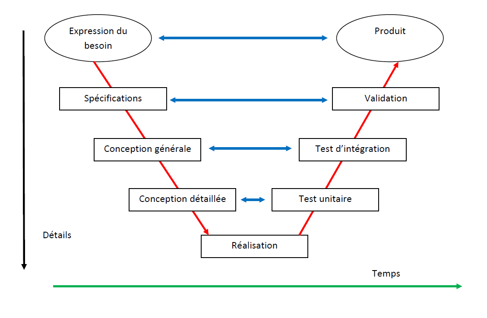

Les phases du cycle en V
Le modèle du cycle en V a été imaginé pour pallier le problème de réactivité du modèle en cascade. Ce modèle est une amélioration du modèle en cascade qui permet en cas d'anomalie, de limiter un retour aux étapes précédentes. Les phases de la partie montante doivent renvoyer de l'information sur les phases en vis-à-vis lorsque des défauts sont détectés afin d'améliorer le logiciel.
De plus le cycle en V met en évidence la nécessité d'anticiper et de préparer dans les étapes descendantes les « attendus » des futures étapes montantes : ainsi les attendus des tests de validation sont définis lors des spécifications, les attendus des tests unitaires sont définis lors de la conception, etc.
Le cycle en V est devenu un standard de l'industrie du développement de logiciel et de la gestion de projet depuis les années 1980.

Created with the Personal Edition of HelpNDoc: Easily create EBooks